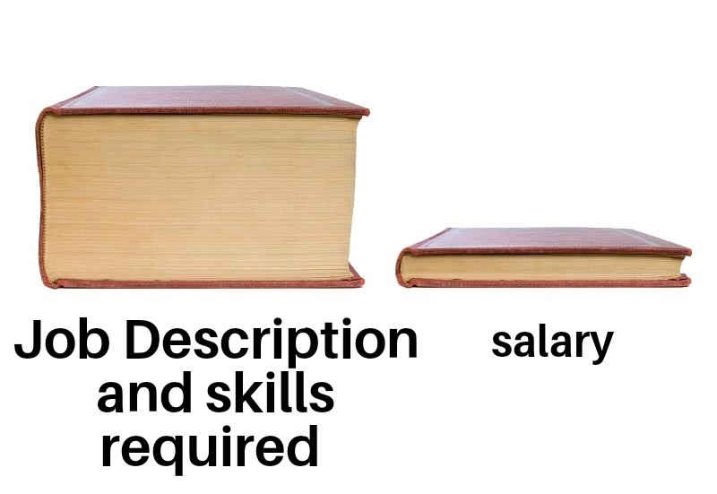
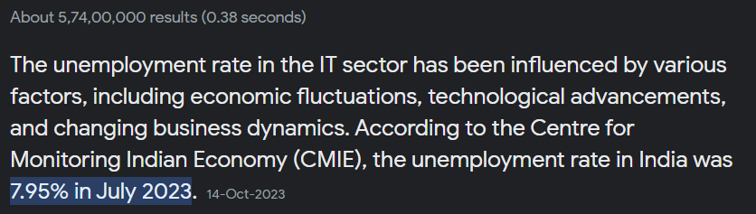

Finished your degree but can't find a job? Facing recession problem? Applied for many jobs but not getting appropriate response? Matching skills but not getting selected? Frustrated by responses like “We will get back to you” and “We are looking for experienced person”? Rejected from multiple job interviews? Selected for the job but not getting the joining letter? Did the company withdraw the job offer? Yes, I am talking about freshers and I am a fresher too.

When I took admission in engineering, I thought that now I will get a high paying job easily and surely. During my first year of engineering, I didn't know the whole truth about the IT industry. Didn't realize that 2 years of engineering was wasted in fun. Then I started preparing for the campus job drive. There are certain eligibility criteria for company job drives. I qualified for some company job drives and not others. My college is not that famous, that's why companies were not coming for recruitment regularly.
I didn't qualify even in the first round of aptitude test. I was rejected in many drives right from the first round. Many companies used to decide the criteria based on the number of candidates. I improved both my aptitude and coding skills. I had all the skills required for campus recruitment. And it paid off, I cleared the first round of qualification for a company and they selected me for a technical interview. I improved both my aptitude and coding skills. I had all the skills required for campus recruitment. And it paid off, I cleared the first round of qualification for the company and they selected me for the technical interview. In the technical interview they asked me questions related to data structures, software development life cycle, computer networking and my skills mentioned in resume. I answered about 90% questions.
I was confident that they will select me for the final HR round and it happened. On the day of the final interview, I was a bit nervous as I had never spoken in any discussion that required good English communication. In a technical interview your communication skills are not very important, you answer the questions read from the resources in technical terms. I clenched my fists and took a deep breath and sat down for the interview.
The interview started, after introduction the interviewer directly asked me about "comfortability between different job roles (two options, developer and tester) and locations", I replied that I'm ready to go anywhere but I'm only interested in a developer role. Then he asked me some questions, but I said no, and then he ended the interview.
This time I was very confident that they would select me but my name did not appear in the final selection list, but two of my friends did. Yes, I was a bit upset because there wasn't much recruiting activity left on campus from this drive. I met our training and placement officer and asked for feedback report of my interview. And what do I see? They rejected me due to not agreeing with the job role and lack of communication skills. But this time I took this criticism positively and started working on it. After that recruitment there was never another recruitment in the campus. And finally, I completed my graduation without any job offer.
Someone suggested me to look for jobs on LinkedIn, I started improving my LinkedIn profile. Add a professional profile picture, self-description, organized resume, certifications and skills. Connect with people working in related industries.
I applied for many jobs on LinkedIn every day, at first, I got no response but then I got "we need someone with experience", "your resume is shortlisted we will get back to you" and "unfortunately, you were not selected". I do not understand, why recruiters add job openings under entry level job profile if the job requires an experienced person? Then someone suggested I connect with a company's HR's on LinkedIn and ask them about job opportunities. I also tried this option to get a job but it didn't help, I never got any response from them.
Now it was time to ask for job referrals. I created a resume again but this time I had a resume full of skills and well organized.
I was literally begging for a job by contacting an employee of a company that had a job opening. And it worked, a nice guy suggested my name for a job in his company. And they started the process within few days, I got interview invitation from them. I cleared both the interview rounds successfully. Now, this time I accepted all the terms and conditions of the recruiters. I got offer letter from them in few days and my onboarding is in next few days. I got this job 5 months after my graduation. Many thanks to the LinkedIn connections who recommended my name for a job opportunity at their organization.